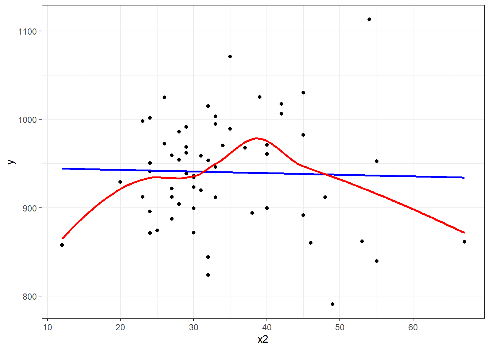
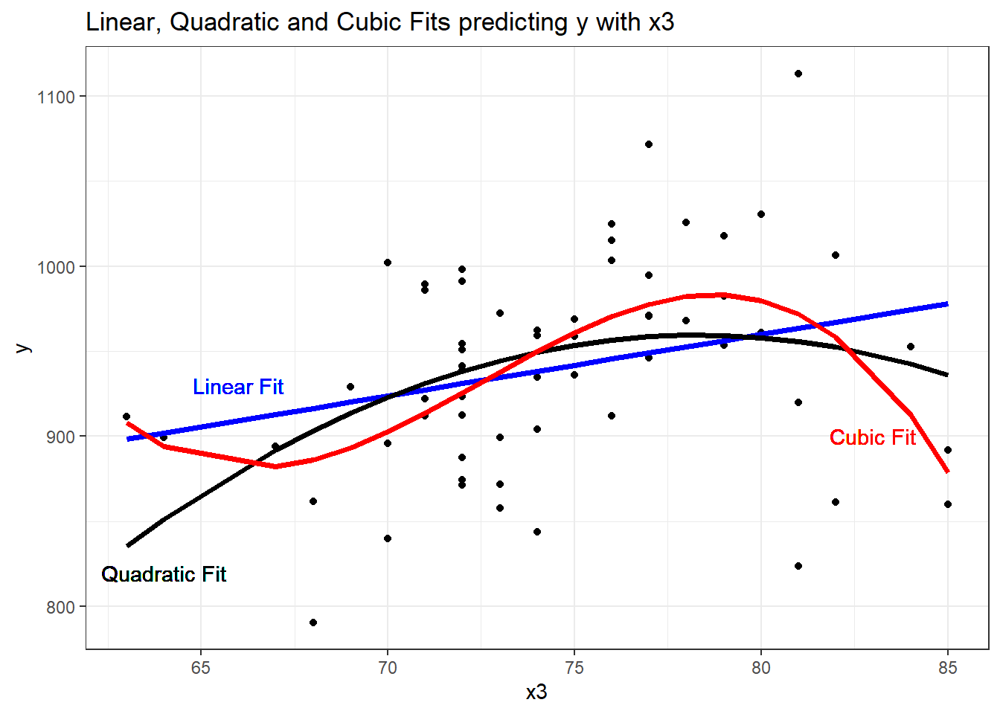

knitr::opts_chunk$set(comment = NA)
library(janitor)
library(broom)
library(car)
library(Hmisc)
library(mosaic)
library(rms)
library(patchwork)
library(tidyverse)
theme_set(theme_bw())13 Adding Non-linear Terms to a Linear Regression
13.1 R Setup Used Here
13.1.1 Data Load
pollution <- read_csv("data/pollution.csv", show_col_types = FALSE) 13.2 The pollution data
Consider the pollution data set, which contain 15 independent variables and a measure of mortality, describing 60 US metropolitan areas in 1959-1961. The data come from @McDonald1973, and are available at http://www4.stat.ncsu.edu/~boos/var.select/pollution.html and our web site.
pollution# A tibble: 60 × 16
x1 x2 x3 x4 x5 x6 x7 x8 x9 x10 x11 x12 x13
<dbl> <dbl> <dbl> <dbl> <dbl> <dbl> <dbl> <dbl> <dbl> <dbl> <dbl> <dbl> <dbl>
1 13 49 68 7 3.36 12.2 90.7 2702 3 51.9 9.7 105 32
2 28 32 81 7 3.27 12.1 81 3665 7.5 51.6 13.2 4 2
3 10 55 70 7.3 3.11 12.1 88.9 3033 5.9 51 14 144 66
4 43 32 74 10.1 3.38 9.5 79.2 3214 2.9 43.7 12 11 7
5 25 12 73 9.2 3.28 12.1 83.1 2095 2 51.9 9.8 20 11
6 35 46 85 7.1 3.22 11.8 79.9 1441 14.8 51.2 16.1 1 1
7 60 67 82 10 2.98 11.5 88.6 4657 13.5 47.3 22.4 3 1
8 11 53 68 9.2 2.99 12.1 90.6 4700 7.8 48.9 12.3 648 319
9 31 24 72 9 3.37 10.9 82.8 3226 5.1 45.2 12.3 5 3
10 15 30 73 8.2 3.15 12.2 84.2 4824 4.7 53.1 12.7 17 8
# … with 50 more rows, and 3 more variables: x14 <dbl>, x15 <dbl>, y <dbl>Here’s a codebook:
| Variable | Description |
|---|---|
y |
Total Age Adjusted Mortality Rate |
x1 |
Mean annual precipitation in inches |
x2 |
Mean January temperature in degrees Fahrenheit |
x3 |
Mean July temperature in degrees Fahrenheit |
x4 |
Percent of 1960 SMSA population that is 65 years of age or over |
x5 |
Population per household, 1960 SMSA |
x6 |
Median school years completed for those over 25 in 1960 SMSA |
x7 |
Percent of housing units that are found with facilities |
x8 |
Population per square mile in urbanized area in 1960 |
x9 |
Percent of 1960 urbanized area population that is non-white |
x10 |
Percent employment in white-collar occupations in 1960 urbanized area |
x11 |
Percent of families with income under 3; 000 in 1960 urbanized area |
x12 |
Relative population potential of hydrocarbons, HC |
x13 |
Relative pollution potential of oxides of nitrogen, NOx |
x14 |
Relative pollution potential of sulfur dioxide, SO2 |
x15 |
Percent relative humidity, annual average at 1 p.m. |
13.3 Fitting a straight line model to predict y from x2
Consider the relationship between y, the age-adjusted mortality rate, and x2, the mean January temperature, across these 60 areas. I’ll include both a linear model (in blue) and a loess smooth (in red.) Does the relationship appear to be linear?
ggplot(pollution, aes(x = x2, y = y)) +
geom_point() +
geom_smooth(method = "lm", col = "blue", se = F) +
geom_smooth(method = "loess", col = "red", se = F)`geom_smooth()` using formula = 'y ~ x'
`geom_smooth()` using formula = 'y ~ x'
Suppose we plot the residuals that emerge from the linear model shown in blue, above. Do we see a curve in a plot of residuals against fitted values?
plot(lm(y ~ x2, data = pollution), which = 1)13.4 Quadratic polynomial model to predict y using x2
A polynomial in the variable x of degree D is a linear combination of the powers of x up to D.
For example:
- Linear: \(y = \beta_0 + \beta_1 x\)
- Quadratic: \(y = \beta_0 + \beta_1 x + \beta_2 x^2\)
- Cubic: \(y = \beta_0 + \beta_1 x + \beta_2 x^2 + \beta_3 x^3\)
- Quartic: \(y = \beta_0 + \beta_1 x + \beta_2 x^2 + \beta_3 x^3 + \beta_4 x^4\)
- Quintic: \(y = \beta_0 + \beta_1 x + \beta_2 x^2 + \beta_3 x^3 + \beta_4 x^4 + \beta_5 x^5\)
Fitting such a model creates a polynomial regression.
13.4.1 The raw quadratic model
Let’s look at a quadratic model which predicts y using x2 and the square of x2, so that our model is of the form:
\[ y = \beta_0 + \beta_1 x_2 + \beta_2 x_2^2 + error \]
There are several ways to fit this exact model.
- One approach is to calculate the square of
x2within ourpollutiondata set, and then feed bothx2andx2squaredtolm. - Another approach uses the I function within our
lmto specify the use of bothx2and its square. - Yet another approach uses the
polyfunction within ourlm, which can be used to specify raw models includingx2andx2squared.
pollution <- pollution |>
mutate(x2squared = x2^2)
mod2a <- lm(y ~ x2 + x2squared, data = pollution)
mod2b <- lm(y ~ x2 + I(x2^2), data = pollution)
mod2c <- lm(y ~ poly(x2, degree = 2, raw = TRUE), data = pollution)Each of these approaches produces the same model, as they are just different ways of expressing the same idea.
summary(mod2a)
Call:
lm(formula = y ~ x2 + x2squared, data = pollution)
Residuals:
Min 1Q Median 3Q Max
-148.977 -38.651 6.889 35.312 189.346
Coefficients:
Estimate Std. Error t value Pr(>|t|)
(Intercept) 785.77449 79.54086 9.879 5.87e-14 ***
x2 8.87640 4.27394 2.077 0.0423 *
x2squared -0.11704 0.05429 -2.156 0.0353 *
---
Signif. codes: 0 '***' 0.001 '**' 0.01 '*' 0.05 '.' 0.1 ' ' 1
Residual standard error: 60.83 on 57 degrees of freedom
Multiple R-squared: 0.07623, Adjusted R-squared: 0.04382
F-statistic: 2.352 on 2 and 57 DF, p-value: 0.1044And if we plot the fitted values for this mod2 using whatever approach you like, we get exactly the same result.
mod2a_aug <- augment(mod2a, pollution)
ggplot(mod2a_aug, aes(x = x2, y = y)) +
geom_point() +
geom_line(aes(x = x2, y = .fitted), col = "red") +
labs(title = "Model 2a: Quadratic fit using x2 and x2^2")
mod2b_aug <- augment(mod2b, pollution)
mod2c_aug <- augment(mod2c, pollution)
p1 <- ggplot(mod2b_aug, aes(x = x2, y = y)) +
geom_point() +
geom_line(aes(x = x2, y = .fitted), col = "red") +
labs(title = "Model 2b: Quadratic fit")
p2 <- ggplot(mod2c_aug, aes(x = x2, y = y)) +
geom_point() +
geom_line(aes(x = x2, y = .fitted), col = "blue") +
labs(title = "Model 2c: Quadratic fit")
p1 + p2
13.4.2 Raw quadratic fit after centering x2
Sometimes, we’ll center (and perhaps rescale, too) the x2 variable before including it in a quadratic fit like this.
pollution <- pollution |>
mutate(x2_c = x2 - mean(x2))
mod2d <- lm(y ~ x2_c + I(x2_c^2), data = pollution)
summary(mod2d)
Call:
lm(formula = y ~ x2_c + I(x2_c^2), data = pollution)
Residuals:
Min 1Q Median 3Q Max
-148.977 -38.651 6.889 35.312 189.346
Coefficients:
Estimate Std. Error t value Pr(>|t|)
(Intercept) 952.25941 9.59896 99.204 <2e-16 ***
x2_c 0.92163 0.93237 0.988 0.3271
I(x2_c^2) -0.11704 0.05429 -2.156 0.0353 *
---
Signif. codes: 0 '***' 0.001 '**' 0.01 '*' 0.05 '.' 0.1 ' ' 1
Residual standard error: 60.83 on 57 degrees of freedom
Multiple R-squared: 0.07623, Adjusted R-squared: 0.04382
F-statistic: 2.352 on 2 and 57 DF, p-value: 0.1044Note that this model looks very different, with the exception of the second order quadratic term. But, it produces the same fitted values as the models we fit previously.
mod2d_aug <- augment(mod2d, pollution)
ggplot(mod2d_aug, aes(x = x2, y = y)) +
geom_point() +
geom_line(aes(x = x2, y = .fitted), col = "red") +
labs(title = "Model 2d: Quadratic fit using centered x2 and x2^2")Or, if you don’t believe me yet, look at the four sets of fitted values another way.
favstats(~ .fitted, data = mod2a_aug) min Q1 median Q3 max mean sd n missing
855.1041 936.7155 945.597 950.2883 954.073 940.3585 17.17507 60 0favstats(~ .fitted, data = mod2b_aug) min Q1 median Q3 max mean sd n missing
855.1041 936.7155 945.597 950.2883 954.073 940.3585 17.17507 60 0favstats(~ .fitted, data = mod2c_aug) min Q1 median Q3 max mean sd n missing
855.1041 936.7155 945.597 950.2883 954.073 940.3585 17.17507 60 0favstats(~ .fitted, data = mod2d_aug) min Q1 median Q3 max mean sd n missing
855.1041 936.7155 945.597 950.2883 954.073 940.3585 17.17507 60 013.5 Orthogonal Polynomials
Now, let’s fit an orthogonal polynomial of degree 2 to predict y using x2.
mod2_orth <- lm(y ~ poly(x2, 2), data = pollution)
summary(mod2_orth)
Call:
lm(formula = y ~ poly(x2, 2), data = pollution)
Residuals:
Min 1Q Median 3Q Max
-148.977 -38.651 6.889 35.312 189.346
Coefficients:
Estimate Std. Error t value Pr(>|t|)
(Intercept) 940.358 7.853 119.746 <2e-16 ***
poly(x2, 2)1 -14.345 60.829 -0.236 0.8144
poly(x2, 2)2 -131.142 60.829 -2.156 0.0353 *
---
Signif. codes: 0 '***' 0.001 '**' 0.01 '*' 0.05 '.' 0.1 ' ' 1
Residual standard error: 60.83 on 57 degrees of freedom
Multiple R-squared: 0.07623, Adjusted R-squared: 0.04382
F-statistic: 2.352 on 2 and 57 DF, p-value: 0.1044Now this looks very different in the equation, but, again, we can see that this produces exactly the same fitted values as our previous models, and the same model fit summaries. Is it, in fact, the same model? Here, we’ll plot the fitted Model 2a in a red line, and this new Model 2 with Orthogonal Polynomials as blue points.
mod2orth_aug <- augment(mod2_orth, pollution)
ggplot(mod2orth_aug, aes(x = x2, y = y)) +
geom_point() +
geom_point(aes(x = x2, y = .fitted),
col = "blue", size = 2) +
geom_line(data = mod2a_aug, aes(x = x2, y = .fitted),
col = "red") +
labs(title = "Model 2 with Orthogonal Polynomial, degree 2")
Yes, it is again the same model in terms of the predictions it makes for y.
By default, with raw = FALSE, the poly() function within a linear model computes what is called an orthogonal polynomial. An orthogonal polynomial sets up a model design matrix using the coding we’ve seen previously: x2 and x2^2 in our case, and then scales those columns so that each column is orthogonal to the previous ones. This eliminates the collinearity (correlation between predictors) and lets our t tests tell us whether the addition of any particular polynomial term improves the fit of the model over the lower orders.
Would the addition of a cubic term help us much in predicting y from x2?
mod3 <- lm(y ~ poly(x2, 3), data = pollution)
summary(mod3)
Call:
lm(formula = y ~ poly(x2, 3), data = pollution)
Residuals:
Min 1Q Median 3Q Max
-146.262 -39.679 5.569 35.984 191.536
Coefficients:
Estimate Std. Error t value Pr(>|t|)
(Intercept) 940.358 7.917 118.772 <2e-16 ***
poly(x2, 3)1 -14.345 61.328 -0.234 0.8159
poly(x2, 3)2 -131.142 61.328 -2.138 0.0369 *
poly(x2, 3)3 16.918 61.328 0.276 0.7837
---
Signif. codes: 0 '***' 0.001 '**' 0.01 '*' 0.05 '.' 0.1 ' ' 1
Residual standard error: 61.33 on 56 degrees of freedom
Multiple R-squared: 0.07748, Adjusted R-squared: 0.02806
F-statistic: 1.568 on 3 and 56 DF, p-value: 0.2073It doesn’t appear that the cubic term adds much here, if anything. The p value is not significant for the third degree polynomial, the summaries of fit quality aren’t much improved, and as we can see from the plot below, the predictions don’t actually change all that much.
mod3_aug <- augment(mod3, pollution)
ggplot(mod3_aug, aes(x = x2, y = y)) +
geom_point() +
geom_line(aes(x = x2, y = .fitted),
col = "blue") +
geom_line(data = mod2orth_aug, aes(x = x2, y = .fitted),
col = "red") +
labs(title = "Quadratic (red) vs. Cubic (blue) Polynomial Fits")
13.6 Fit a cubic polynomial to predict y from x3
What if we consider another predictor instead? Let’s look at x3, the Mean July temperature in degrees Fahrenheit. Here is the loess smooth.
ggplot(pollution, aes(x = x3, y = y)) +
geom_point() +
geom_smooth(method = "loess")`geom_smooth()` using formula = 'y ~ x'That looks pretty curvy - perhaps we need a more complex polynomial. We’ll consider a linear model (mod4_L), a quadratic fit (mod4_Q) and a polynomial of degree 3: a cubic fit (mod_4C)
mod4_L <- lm(y ~ x3, data = pollution)
summary(mod4_L)
Call:
lm(formula = y ~ x3, data = pollution)
Residuals:
Min 1Q Median 3Q Max
-139.813 -34.341 4.271 38.197 149.587
Coefficients:
Estimate Std. Error t value Pr(>|t|)
(Intercept) 670.529 123.140 5.445 1.1e-06 ***
x3 3.618 1.648 2.196 0.0321 *
---
Signif. codes: 0 '***' 0.001 '**' 0.01 '*' 0.05 '.' 0.1 ' ' 1
Residual standard error: 60.29 on 58 degrees of freedom
Multiple R-squared: 0.07674, Adjusted R-squared: 0.06082
F-statistic: 4.821 on 1 and 58 DF, p-value: 0.03213mod4_Q <- lm(y ~ poly(x3, 2), data = pollution)
summary(mod4_Q)
Call:
lm(formula = y ~ poly(x3, 2), data = pollution)
Residuals:
Min 1Q Median 3Q Max
-132.004 -42.184 4.069 47.126 157.396
Coefficients:
Estimate Std. Error t value Pr(>|t|)
(Intercept) 940.358 7.553 124.503 <2e-16 ***
poly(x3, 2)1 132.364 58.504 2.262 0.0275 *
poly(x3, 2)2 -125.270 58.504 -2.141 0.0365 *
---
Signif. codes: 0 '***' 0.001 '**' 0.01 '*' 0.05 '.' 0.1 ' ' 1
Residual standard error: 58.5 on 57 degrees of freedom
Multiple R-squared: 0.1455, Adjusted R-squared: 0.1155
F-statistic: 4.852 on 2 and 57 DF, p-value: 0.01133mod4_C <- lm(y ~ poly(x3, 3), data = pollution)
summary(mod4_C)
Call:
lm(formula = y ~ poly(x3, 3), data = pollution)
Residuals:
Min 1Q Median 3Q Max
-148.004 -29.998 1.441 34.579 141.396
Coefficients:
Estimate Std. Error t value Pr(>|t|)
(Intercept) 940.358 7.065 133.095 < 2e-16 ***
poly(x3, 3)1 132.364 54.728 2.419 0.01886 *
poly(x3, 3)2 -125.270 54.728 -2.289 0.02588 *
poly(x3, 3)3 -165.439 54.728 -3.023 0.00377 **
---
Signif. codes: 0 '***' 0.001 '**' 0.01 '*' 0.05 '.' 0.1 ' ' 1
Residual standard error: 54.73 on 56 degrees of freedom
Multiple R-squared: 0.2654, Adjusted R-squared: 0.226
F-statistic: 6.742 on 3 and 56 DF, p-value: 0.0005799It looks like the cubic polynomial term is of some real importance here. Do the linear, quadratic and cubic model fitted values look different?
mod4_L_aug <- augment(mod4_L, pollution)
mod4_Q_aug <- augment(mod4_Q, pollution)
mod4_C_aug <- augment(mod4_C, pollution)
ggplot(pollution, aes(x = x3, y = y)) +
geom_point() +
geom_line(data = mod4_L_aug, aes(x = x3, y = .fitted),
col = "blue", size = 1.25) +
geom_line(data = mod4_Q_aug, aes(x = x3, y = .fitted),
col = "black", size = 1.25) +
geom_line(data = mod4_C_aug, aes(x = x3, y = .fitted),
col = "red", size = 1.25) +
geom_text(x = 66, y = 930, label = "Linear Fit", col = "blue") +
geom_text(x = 64, y = 820, label = "Quadratic Fit", col = "black") +
geom_text(x = 83, y = 900, label = "Cubic Fit", col = "red") +
labs(title = "Linear, Quadratic and Cubic Fits predicting y with x3") +
theme_bw()Warning: Using `size` aesthetic for lines was deprecated in ggplot2 3.4.0.
ℹ Please use `linewidth` instead.
13.7 Fitting a restricted cubic spline in a linear regression
- A linear spline is a continuous function formed by connecting points (called knots of the spline) by line segments.
- A restricted cubic spline is a way to build highly complicated curves into a regression equation in a fairly easily structured way.
- A restricted cubic spline is a series of polynomial functions joined together at the knots.
- Such a spline gives us a way to flexibly account for non-linearity without over-fitting the model.
- Restricted cubic splines can fit many different types of non-linearities.
- Specifying the number of knots is all you need to do in R to get a reasonable result from a restricted cubic spline.
The most common choices are 3, 4, or 5 knots. Each additional knot adds to the non-linearity, and spends an additional degree of freedom:
- 3 Knots, 2 degrees of freedom, allows the curve to “bend” once.
- 4 Knots, 3 degrees of freedom, lets the curve “bend” twice.
- 5 Knots, 4 degrees of freedom, lets the curve “bend” three times.
For most applications, three to five knots strike a nice balance between complicating the model needlessly and fitting data pleasingly. Let’s consider a restricted cubic spline model for our y based on x3 again, but now with:
- in
mod5a, 3 knots, - in
mod5b, 4 knots, and - in
mod5c, 5 knots
mod5a_rcs <- lm(y ~ rcs(x3, 3), data = pollution)
mod5b_rcs <- lm(y ~ rcs(x3, 4), data = pollution)
mod5c_rcs <- lm(y ~ rcs(x3, 5), data = pollution)Here, for instance, is the summary of the 5-knot model:
summary(mod5c_rcs)
Call:
lm(formula = y ~ rcs(x3, 5), data = pollution)
Residuals:
Min 1Q Median 3Q Max
-141.522 -32.009 1.674 31.971 147.878
Coefficients:
Estimate Std. Error t value Pr(>|t|)
(Intercept) 468.113 396.319 1.181 0.243
rcs(x3, 5)x3 6.447 5.749 1.121 0.267
rcs(x3, 5)x3' -25.633 46.810 -0.548 0.586
rcs(x3, 5)x3'' 323.137 293.065 1.103 0.275
rcs(x3, 5)x3''' -612.578 396.270 -1.546 0.128
Residual standard error: 54.35 on 55 degrees of freedom
Multiple R-squared: 0.2883, Adjusted R-squared: 0.2366
F-statistic: 5.571 on 4 and 55 DF, p-value: 0.0007734We’ll begin by storing the fitted values from these three models and other summaries, for plotting.
mod5a_aug <- augment(mod5a_rcs, pollution)
mod5b_aug <- augment(mod5b_rcs, pollution)
mod5c_aug <- augment(mod5c_rcs, pollution)p2 <- ggplot(pollution, aes(x = x3, y = y)) +
geom_point() +
geom_smooth(method = "loess", col = "purple", se = F) +
labs(title = "Loess Smooth") +
theme_bw()
p3 <- ggplot(mod5a_aug, aes(x = x3, y = y)) +
geom_point() +
geom_line(aes(x = x3, y = .fitted),
col = "blue", size = 1.25) +
labs(title = "RCS, 3 knots") +
theme_bw()
p4 <- ggplot(mod5b_aug, aes(x = x3, y = y)) +
geom_point() +
geom_line(aes(x = x3, y = .fitted),
col = "black", size = 1.25) +
labs(title = "RCS, 4 knots") +
theme_bw()
p5 <- ggplot(mod5c_aug, aes(x = x3, y = y)) +
geom_point() +
geom_line(aes(x = x3, y = .fitted),
col = "red", size = 1.25) +
labs(title = "RCS, 5 knots") +
theme_bw()
(p2 + p3) / (p4 + p5)`geom_smooth()` using formula = 'y ~ x'Does it seem like the fit improves markedly (perhaps approaching the loess smooth result) as we increase the number of knots?
anova(mod5a_rcs, mod5b_rcs, mod5c_rcs)Analysis of Variance Table
Model 1: y ~ rcs(x3, 3)
Model 2: y ~ rcs(x3, 4)
Model 3: y ~ rcs(x3, 5)
Res.Df RSS Df Sum of Sq F Pr(>F)
1 57 194935
2 56 171448 1 23486.9 7.9503 0.006672 **
3 55 162481 1 8967.2 3.0354 0.087057 .
---
Signif. codes: 0 '***' 0.001 '**' 0.01 '*' 0.05 '.' 0.1 ' ' 1Based on an ANOVA comparison, the fourth knot adds significant predictive value (p = 0.0067), but the fifth knot is borderline (p = 0.0871). From the glance function in the broom package, we can also look at some key summaries.
glance(mod5a_rcs)# A tibble: 1 × 12
r.squ…¹ adj.r…² sigma stati…³ p.value df logLik AIC BIC devia…⁴ df.re…⁵
<dbl> <dbl> <dbl> <dbl> <dbl> <dbl> <dbl> <dbl> <dbl> <dbl> <int>
1 0.146 0.116 58.5 4.88 0.0111 2 -328. 663. 672. 194935. 57
# … with 1 more variable: nobs <int>, and abbreviated variable names
# ¹r.squared, ²adj.r.squared, ³statistic, ⁴deviance, ⁵df.residualglance(mod5b_rcs)# A tibble: 1 × 12
r.squ…¹ adj.r…² sigma stati…³ p.value df logLik AIC BIC devia…⁴ df.re…⁵
<dbl> <dbl> <dbl> <dbl> <dbl> <dbl> <dbl> <dbl> <dbl> <dbl> <int>
1 0.249 0.209 55.3 6.19 0.00104 3 -324. 658. 668. 171448. 56
# … with 1 more variable: nobs <int>, and abbreviated variable names
# ¹r.squared, ²adj.r.squared, ³statistic, ⁴deviance, ⁵df.residualglance(mod5c_rcs)# A tibble: 1 × 12
r.squ…¹ adj.r…² sigma stati…³ p.value df logLik AIC BIC devia…⁴ df.re…⁵
<dbl> <dbl> <dbl> <dbl> <dbl> <dbl> <dbl> <dbl> <dbl> <dbl> <int>
1 0.288 0.237 54.4 5.57 7.73e-4 4 -322. 657. 669. 162481. 55
# … with 1 more variable: nobs <int>, and abbreviated variable names
# ¹r.squared, ²adj.r.squared, ³statistic, ⁴deviance, ⁵df.residual| Model | Knots | \(R^2\) | Adj. \(R^2\) | AIC | BIC |
|---|---|---|---|---|---|
| 5a | 3 | 0.146 | 0.116 | 663.4 | 671.8 |
| 5b | 4 | 0.249 | 0.209 | 657.7 | 668.2 |
| 5c | 5 | 0.288 | 0.237 | 656.5 | 669.1 |
Within our sample, the five-knot RCS outperforms the 3- and 4-knot versions on adjusted \(R^2\) and AIC (barely) and does a little worse than the 4-knot RCS on BIC.
Of course, we could also use the cross-validation methods we’ve developed for other linear regressions to assess predictive capacity of these models. I’ll skip that for now.
To see the values of x3 where the splines place their knots, we can use the attributes function.
attributes(rcs(pollution$x3, 5))$dim
[1] 60 4
$dimnames
$dimnames[[1]]
NULL
$dimnames[[2]]
[1] "pollution" "pollution'" "pollution''" "pollution'''"
$class
[1] "rms"
$name
[1] "pollution"
$label
[1] "pollution"
$assume
[1] "rcspline"
$assume.code
[1] 4
$parms
[1] 68 72 74 77 82
$nonlinear
[1] FALSE TRUE TRUE TRUE
$colnames
[1] "pollution" "pollution'" "pollution''" "pollution'''"The knots in this particular 5-knot spline are placed by the computer at 68, 72, 74, 77 and 82, it seems.
There are two kinds of Multivariate Regression Models
- [Prediction] Those that are built so that we can make accurate predictions.
- [Explanatory] Those that are built to help understand underlying phenomena.
While those two notions overlap considerably, they do imply different things about how we strategize about model-building and model assessment. Harrell’s primary concern is effective use of the available data for prediction - this implies some things that will be different from what we’ve seen in the past.
Harrell refers to multivariable regression modeling strategy as the process of spending degrees of freedom. The main job in strategizing about multivariate modeling is to
- Decide the number of degrees of freedom that can be spent
- Decide where to spend them
- Spend them, wisely.
What this means is essentially linked to making decisions about predictor complexity, both in terms of how many predictors will be included in the regression model, and about how we’ll include those predictors.
13.8 “Spending” Degrees of Freedom
- “Spending” df includes
- fitting parameter estimates in models, or
- examining figures built using the outcome variable Y that tell you how to model the predictors.
If you use a scatterplot of Y vs. X or the residuals of the Y-X regression model vs. X to decide whether a linear model is appropriate, then how many degrees of freedom have you actually spent?
Grambsch and O’Brien conclude that if you wish to preserve the key statistical properties of the various estimation and fitting procedures used in building a model, you can’t retrieve these degrees of freedom once they have been spent.
13.8.1 Overfitting and Limits on the # of Predictors
Suppose you have a total sample size of \(n\) observations, then you really shouldn’t be thinking about estimating more than \(n / 15\) regression coefficients, at the most.
- If \(k\) is the number of parameters in a full model containing all candidate predictors for a stepwise analysis, then \(k\) should be no greater than \(n / 15\).
- \(k\) should include all variables screened for association with the response, including interaction terms.
- Sometimes I hold myself to a tougher standard, or \(n / 50\) predictors, at maximum.
So if you have 97 observations in your data, then you can probably just barely justify the use of a stepwise analysis using the main effects alone of 5 candidate variables (with one additional DF for the intercept term) using the \(n/15\) limit.
@Harrell2001 also mentions that if you have a narrowly distributed predictor, without a lot of variation to work with, then an even larger sample size \(n\) should be required. See @Vittinghoff2012, Section 10.3 for more details.
13.8.2 The Importance of Collinearity
Collinearity denotes correlation between predictors high enough to degrade the precision of the regression coefficient estimates substantially for some or all of the correlated predictors
@Vittinghoff2012, section 10.4.1
Can one predictor in a model be predicted well using the other predictors in the model?
- Strong correlations (for instance, \(r \geq 0.8\)) are especially troublesome.
Effects of collinearity
- decreases precision, in the sense of increasing the standard errors of the parameter estimates
- decreases power
- increases the difficulty of interpreting individual predictor effects
- overall F test is significant, but individual t tests may not be
Suppose we want to assess whether variable \(X_j\) is collinear with the other predictors in a model. We run a regression predicting \(X_j\) using the other predictors, and obtain the \(R^2\). The VIF is defined as 1 / (1 - this \(R^2\)), and we usually interpret VIFs above 5 as indicating a serious multicollinearity problem (i.e. \(R^2\) values for this predictor of 0.8 and above would thus concern us.)
vif(lm(y ~ x1 + x2 + x3 + x4 + x5 + x6, data = pollution)) x1 x2 x3 x4 x5 x6
2.238862 2.058731 2.153044 4.174448 3.447399 1.792996 Occasionally, you’ll see the inverse of VIF reported, and this is called tolerance.
- tolerance = 1 / VIF
13.8.3 Collinearity in an Explanatory Model
- When we are attempting to identify multiple independent predictors (the explanatory model approach), then we will need to choose between collinear variables
- options suggested by @Vittinghoff2012, p. 422, include choosing on the basis of plausibility as a causal factor,
- choosing the variable that has higher data quality (is measured more accurately or has fewer missing values.)
- Often, we choose to include a variable that is statistically significant as a predictor, and drop others, should we be so lucky.
- Larger effects, especially if they are associated with predictors that have minimal correlation with the other predictors under study, cause less trouble in terms of potential violation of the \(n/15\) rule for what constitutes a reasonable number of predictors.
13.8.4 Collinearity in a Prediction Model
- If we are primarily building a prediction model for which inference on the individual predictors is not of interest, then it is totally reasonable to use both predictors in the model, if doing so reduces prediction error.
- Collinearity doesn’t affect predictions in our model development sample.
- Collinearity doesn’t affect predictions on new data so long as the new data have similar relationships between predictors.
- If our key predictor is correlated strongly with a confounder, then if the predictor remains significant after adjustment for the confounder, then this suggests a meaningful independent effect.
- If the effects of the predictor are clearly confounded by the adjustment variable, we again have a clear result.
- If neither is statistically significant after adjustment, the data may be inadequate.
- If the collinearity is between adjustment variables, but doesn’t involve the key predictor, then inclusion of the collinear variables is unlikely to cause substantial problems.
13.9 Spending DF on Non-Linearity: The Spearman Plot
We need a flexible approach to assessing non-linearity and fitting models with non-linear predictors. This will lead us to a measure of what @Harrell2001 calls potential predictive punch which hides the true form of the regression from the analyst so as to preserve statistical properties, but that lets us make sensible decisions about whether a predictor should be included in a model, and the number of parameters (degrees of freedom, essentially) we are willing to devote to it.
What if we want to consider where best to spend our degrees of freedom on non-linear predictor terms, like interactions, polynomial functions or curved splines to represent our input data? The approach we’ll find useful in the largest variety of settings is a combination of
- a rank correlation assessment of potential predictive punch (using a Spearman \(\rho^2\) plot, available in the
Hmiscpackage), followed by - the application of restricted cubic splines to fit and assess models.
Let’s try such a plot for our fifteen predictors:
sp2 <- spearman2(y ~ x1 + x2 + x3 + x4 + x5 + x6 + x7 +
x8 + x9 + x10 + x11 + x12 + x13 +
x14 + x15, data = pollution)
plot(sp2)The variable with the largest adjusted squared Spearman \(\rho\) statistic in this setting is x9, followed by x6 and x14. With only 60 observations, we might well want to restrict ourselves to a very small model. What the Spearman plot suggests is that we focus any non-linear terms on x9 first, and then perhaps x6 and x14 as they have some potential predictive power. It may or may not work out that the non-linear terms are productive.
13.9.1 Fitting a Big Model to the pollution data
So, one possible model built in reaction this plot might be to fit:
- a restricted cubic spline with 5 knots on
x9, - a restricted cubic spline with 3 knots on
x6, - a quadratic polynomial on
x14, and - a linear fit to
x1andx13
That’s way more degrees of freedom (4 for x9, 2 for x6, 2 for x14 and 1 each for x1 and x13 makes a total of 10 without the intercept term) than we can really justify with a sample of 60 observations. But let’s see what happens.
mod_big <- lm(y ~ rcs(x9, 5) + rcs(x6, 3) + poly(x14, 2) +
x1 + x13, data = pollution)
anova(mod_big)Analysis of Variance Table
Response: y
Df Sum Sq Mean Sq F value Pr(>F)
rcs(x9, 5) 4 100164 25040.9 17.8482 4.229e-09 ***
rcs(x6, 3) 2 38306 19152.8 13.6513 1.939e-05 ***
poly(x14, 2) 2 15595 7797.7 5.5579 0.006677 **
x1 1 4787 4787.3 3.4122 0.070759 .
x13 1 712 711.9 0.5074 0.479635
Residuals 49 68747 1403.0
---
Signif. codes: 0 '***' 0.001 '**' 0.01 '*' 0.05 '.' 0.1 ' ' 1This anova suggests that we have at least some predictive value in each spline (x9 and x6) and some additional value in x14, although it’s not as clear that the linear terms (x1 and x13) did much good.
13.9.2 Limitations of lm for fitting complex linear regression models
We can certainly assess this big, complex model using lm in comparison to other models:
- with in-sample summary statistics like adjusted \(R^2\), AIC and BIC,
- we can assess its assumptions with residual plots, and
- we can also compare out-of-sample predictive quality through cross-validation,
But to really delve into the details of how well this complex model works, and to help plot what is actually being fit, we’ll probably want to fit the model using an alternative method for fitting linear models, called ols, from the rms package developed by Frank Harrell and colleagues. That’s where we’re heading, in Chapter 14.